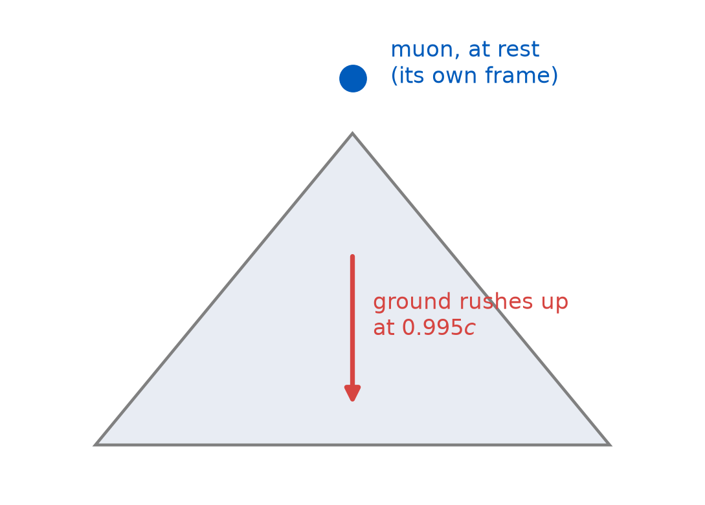
Length Contraction
PHY 208 · Special Relativity · Lecture 6
Tim Thomay
2026-09-10
Before we start
Milestone 1 goes up today, right after class — group work, one submission per pair. Due Fri Oct 2 on UB Learns. Pass / revise-once / miss; your notebook pages and ST-ERF pages are the raw material — find them.
Also live: problem set 2, due Sun 11:59 pm · light-clock notebook entries were due 11:00 today.
Nobody told the muon
In its own frame the muon’s clock is not slow. It has \(2.2\ \mu\text{s}\) to live, and at \(0.995c\) that covers 660 m.
The atmosphere is 15 000 m deep.
And yet it lands. Both frames agree it lands.
Both frames, honestly
| ground frame | muon frame | |
|---|---|---|
| muon’s lifetime | \(\gamma\tau = 22\ \mu\)s — dilated | \(\tau = 2.2\ \mu\)s — proper |
| atmosphere depth | 15 km — proper | ? |
| muon reaches ground | yes | must be yes — same events |
Whether birth and landing are the same muon’s worldline is not a matter of frame. Only the story can differ — never the events.
The distance is what gives
gamma at 0.995c = 10.0
atmosphere, ground frame = 15.0 km (proper)
atmosphere, muon frame = 15.0/gamma = 1.5 km
time to cross it at 0.995c = 5.0 us = 2.3 lifetimes
surviving: e^(-2.3) = 10% -- Tuesday's 10%, recovered\[L = \frac{L_0}{\gamma}\]
A moving length is contracted — same \(\gamma\), now in the denominator.
Proper length, proper time — the pair
| defined as | measured by | everyone else gets | |
|---|---|---|---|
| proper time \(\tau\) | time between two events | one clock at both events | more: \(\Delta t = \gamma\tau\) |
| proper length \(L_0\) | length of an object | the frame where it rests | less: \(L = L_0/\gamma\) |
The ship contracts your lab right back
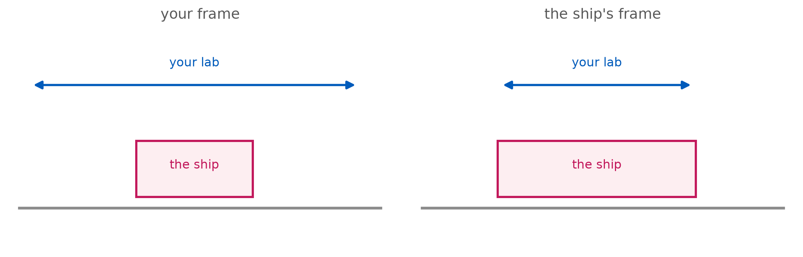
You measure the ship short. The crew measures your lab short. Symmetric — and both are correct, exactly like the clocks.
What “measuring a moving length” even means
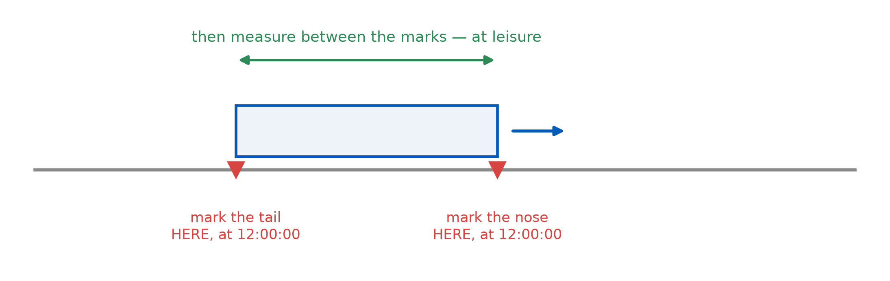
Two marks — and they are only a length if they were made at the same time.
Contraction is simultaneity in disguise
| your account | the train’s account | |
|---|---|---|
| the two marks | made at 12:00:00 — simultaneous, by my lattice | not simultaneous — “you marked the nose first, then let the train run before marking the tail” |
| the result | \(L = L_0/\gamma\) — shorter, done | “of course the marks came out short — nothing happened to my train” |
No new postulate, no squashing force. Length contraction is the relativity of simultaneity, applied to rulers.
Only along the motion
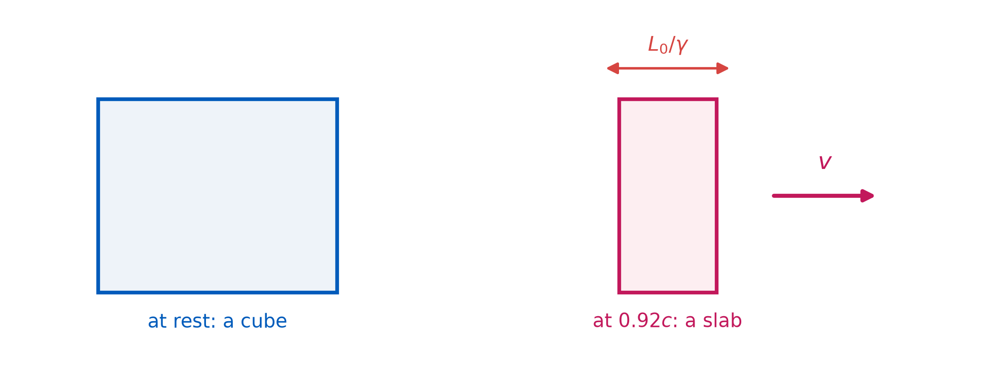
Height and width are untouched — only the dimension along \(v\) contracts.
The scale of it
object gamma L/L0
high-speed train 1.000000 1.000000000
New Horizons probe 1.000000 0.999999998
muon's atmosphere 10.012523 0.099874922
LHC proton 7453.559961 0.000134164An LHC proton, in the lab’s books, is a disc ~7000× thinner than it is wide. Not a metaphor — it is how the collision geometry is computed.
A 100 m train runs into a 100 m tunnel at high speed. In the tunnel’s frame the train is contracted, so it fits entirely inside — both doors could shut for an instant. In the train’s frame the tunnel is contracted.
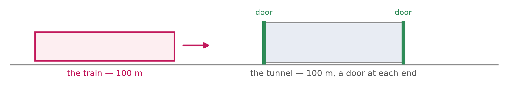
Does it still fit?
(a) Yes — fitting is a fact both must agree on
(b) No — so one frame must be wrong
(c) The train is destroyed, so (d) is impossible
(d) No, and the two frames disagree about whether the doors were shut together
The tunnel, resolved
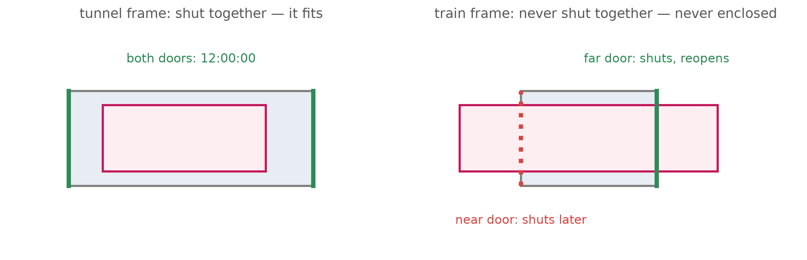
“Fits” = “both ends inside at the same time” — a simultaneity claim, not an event. Frames may disagree about it, and no door ever touches the train.
One muon, two stories — with real data
Frisch & Smith, 1963 — Mt. Washington summit → sea level, 1907 m: 563/hr → 408/hr · \(v \approx 0.995c\) · \(\gamma \approx 8.4\) · \(\tau = 2.2\ \mu\)s · \(N = N_0\,e^{-t/\text{lifetime}}\) · \(c = 300\) m/μs
Left half — the ground’s story
- transit time: \(t = 1907\ \text{m} \div 0.995c\)
- lifetime in these books: \(\gamma\tau\)
- surviving fraction: \(e^{-t/\gamma\tau}\)
- \(\times\ 563\)/hr → compare to 408
Right half — the muon’s story
- contract the mountain: \(h = 1907\ \text{m} \div \gamma\)
- transit time: \(t = h \div 0.995c\)
- surviving fraction: \(e^{-t/\tau}\)
- \(\times\ 563\)/hr → compare to 408
Compare across the aisle. Done early? \(\gamma = 1\) → Newton’s prediction.
Checkpoint, step 1: left \(6.4\ \mu\)s · right \(227\) m — not there, hand up.
Both stories, one answer
ground story: t = 6.39 us of DILATED life 18.5 us -> 563*e^-0.35 = 398/hr
muon story: 227 m at 0.995c = 0.76 us of PLAIN 2.2 us -> 563*e^-0.35 = 398/hr
measured: 408/hr classical prediction: 31/hrTime dilation and length contraction are one effect, seen from two chairs. The frames share the events — the muon lands — and split the explanation.
Nothing squashes
| the claim | who measures it | what it is |
|---|---|---|
| “the ship is 44 m long” | the lab lattice | a correct measurement |
| “the ship is 100 m long” | the crew | its proper length — also correct |
| “the hull is compressed” | nobody | a property claim no frame verifies |
No stress, no strain, no force along the hull. The crew notices nothing. Contraction is a relation between object and frame — not something that happens to the object.
Measured is not photographed

The man who almost had it
1892: Lorentz and FitzGerald propose that motion through the ether physically squeezes matter by exactly \(1/\gamma\) — invented to rescue Michelson–Morley.
Right formula. Wrong story.
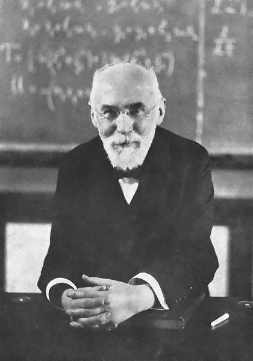
Tuesday’s missing ending: the clocks caught up
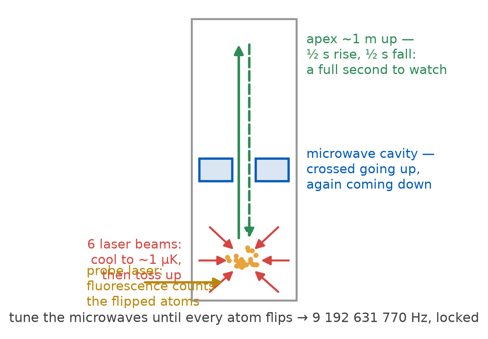
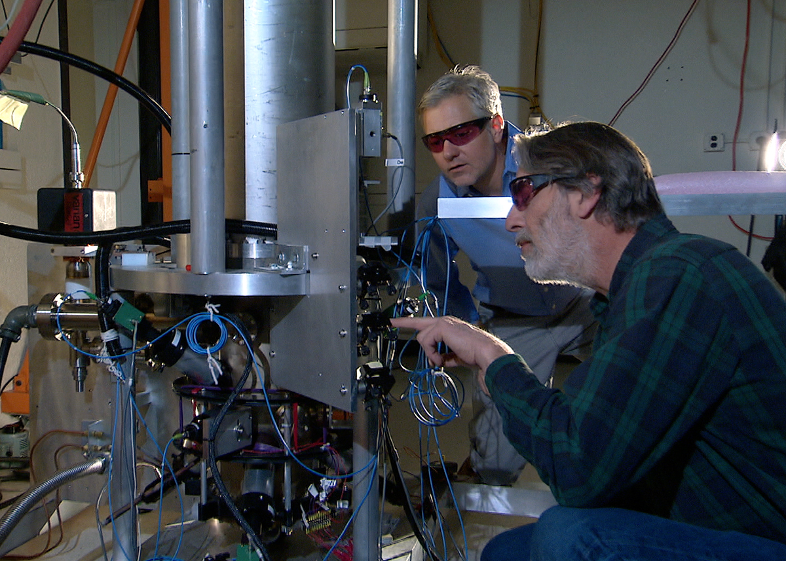
| one tick | 9 192 631 770 swings |
| NIST-F2 | 1 s wrong in 300 Myr |
A clock built from Nobel prizes
| year | for | who |
|---|---|---|
| 1944 | magnetic resonance — and with it, the atomic-clock idea | Rabi — Tuesday’s “who ordered that?” man |
| 1989 | the interrogation method inside every cesium clock | Ramsey |
| 1997 | laser cooling — cold, slow, watchable atoms | Chu · Cohen-Tannoudji · Phillips |
| 2005 | the frequency comb — the gearbox to optical clocks | Hall · Hänsch |
| 2012 | quantum control of single trapped ions | Wineland |
With that last generation, NIST watched a clock moving at 10 m/s run slow — bicycle speed. “Too small to ever notice” ended in 2010.
What this week actually changed
| quantity | at rest | moving past you | symmetric? |
|---|---|---|---|
| a clock’s tick | \(\tau\) | \(\gamma\tau\) — slower | yes — each sees the other slow |
| a rod’s length | \(L_0\) | \(L_0/\gamma\) — shorter | yes — each sees the other short |
| the mechanism | — | relativity of simultaneity | one argument, two costumes |
“When does the math start?”
Asked after class Tuesday — and it is a fair question. We demolished absolute simultaneity without a single line of algebra.
| all we have used, L01–L06 | still untouched |
|---|---|
| light at \(c\) for everyone — a postulate | the Lorentz transformation |
| one right triangle (Pythagoras) | matrices, four-vectors |
| exponential decay, \(N_0\,e^{-t/\tau}\) | calculus |
| definitions of measuring — mark, compare, at the same time | tensors, metrics |
That was not the warm-up before the physics. The arguments were the physics. \(\gamma\) is the entire formula stock so far — and it came from a triangle.
Don’t take my word for it — Annalen der Physik 17, 891 (1905)
§1, p. 893 — the definition. There is our train:
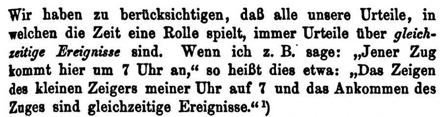
§2, p. 897 — the punchline. And look what starts right below:
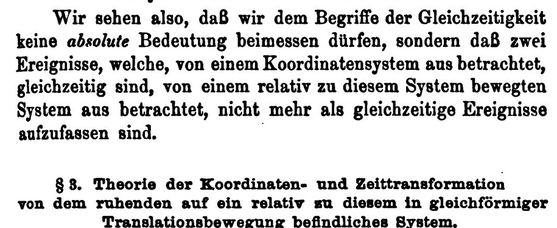
The math starts Tuesday
This week’s way
The train, the lightning, eight slides of argument → “B struck first, by \(\gamma vL/c^{2}\).”
Tuesday’s way
\[t' = \gamma\left(t - \frac{vx}{c^{2}}\right),\quad x' = \gamma\,(x - vt)\]
L04's lightning offset, one line: 0.75 usSame physics, industrialized: every thought experiment from L03–L06 becomes one line of algebra — and velocity addition, the speed limit, and the invariant interval come out as change.
Tuesday
The Lorentz transformation
| What it is | the machine that does L04–L06 in one line |
| Bonus | it is a matrix — MTH 309 students, your moment approaches |
| Prep check 3 | due Tue 10:30 — dilation & contraction |
| Problem set 2 | due Sun 11:59 pm |
Exit ticket
A student says: “At \(0.87c\) a spaceship is measured at half its length — so the hull must be squeezed under enormous stress.”
In one or two sentences, what is wrong with this?
Scan it, or find it on UB Learns. Due 11:59 tonight.
Not graded, ever — I read these to decide what to spend class time on. “I don’t follow this, and here is where I lost it” is a useful answer.
PHY 208 — Length Contraction Tim Thomay · University at Buffalo · Fall 2026
Course material licensed CC BY-SA 4.0
Images retain their original licenses — see img/CREDITS.md